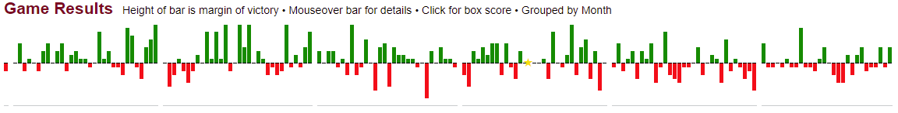
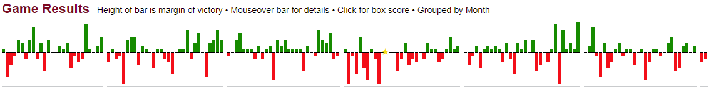

Not All Runs are Created Equal
by A. Kline
Posted on 07/16/2021
When it comes to measuring the performance of teams, there are a couple options. The first and most obvious would be win-loss record, as it determines which teams make the postseason (and therefore which teams can compete for the championship), and also directly quantifies how successful each team is when it comes to achieving their most fundamental goal in any given baseball game (teams aren’t baseball stats nerds—they don’t care how many runs they score as long as it’s more than their opponents).
But this has its limitations. As any baseball fan will be quick to tell you, it’s possible for the outcome of a game to be swayed by luck more than skill. It’s also possible to see how luck and skill influence games even when the outcome is ignored. Let me show you what I mean. Let’s imagine two teams, team A and team B, that play two 3-game series in a given season. The first series goes as follows: B wins 5-4, A wins 11-0, and B wins 3-2. The second series looks like this: A wins 7-2, B wins 2-0, and A wins 5-1. On the surface it may seem as though these teams are evenly matched—after all, they each have three game wins and one series win. However, a deeper dive reveals that Team B likely benefited more from luck than Team A did. Even though they won the first series two games to one, they were outscored 17 runs to 8—meaning Team A scored more than twice as much as they did despite losing the series. The second series, on the other hand, seems to have a fairer outcome—Team A won two games to one while outscoring Team B 12 to 5.
This issue was the inspiration for adopting run differential. As mathematical as that term sounds, it’s actually quite simple:
Run Differential = Runs Scored - Runs Allowed
By knowing how many more (or fewer) runs a team has scored than allowed, we can get a better idea of how good teams are at outscoring their opponents—and by extension, how good they should be at winning games. (Run differential is also the basis for the metric Pythagorean Win-Loss record, which I will refer to now and again throughout this post). Obviously how good teams should be and how good teams end up being at winning games will never line up completely, and run differential is one way to isolate good examples of this phenomenon. In 2014, the Athletics scored 157 more runs than they allowed—good for a 99-63 Pythagorean win-loss record—yet they only won 88 games and lost to the eventual American League champion Royals in the wild card game. In contrast, the 2016 Rangers scored only eight more runs than they allowed—an 82-80 Pythagorean record—yet won the AL West by a significant margin with their 95 wins and 65 losses.
Here are the game results for the Athletics in 2014, where the height of each bar is the margin of victory for that game (greens are wins, reds are losses). Note the large number of tall green bars and short red bars—those indicate blowout wins and close losses, respectively, both key ingredients in any team that underperforms according to their run differential. (Data: Baseball-Reference.com)
Here, on the other hand, are the game results for the Rangers in 2016. The many tall red bars and short green bars show that the team often won by a small margin but lost by a bigger one, a signifier that they were quite lucky to win 95 games that season. (Data: Baseball-Reference.com)
There’s no question that run differential allows for more nuance when it comes to evaluating teams than a simple win-loss record, but it’s by no means perfect either. Let’s consider, for example, how many different ways you can score a single run. A solo home run. Two doubles in a row. A bases-loaded intentional walk. Not all of these events represent the same amount of time and effort from the scoring team, but they all yield the same result. More importantly, it’s easier to score a run against some teams than it is against others. You would be ashamed if your team could only put up one run in nine innings against the Diamondbacks, but you’d sigh a breath of relief if you scored at all while Jacob deGrom was on the mound for the Mets. So if not all runs are equally easy to get, then why treat them as such?
You might respond to my question by saying that my point can only apply to individual games, as all these runs of different value will even out as teams play a greater variety of other teams over the course of a 162-game season. Well to an extent, you would be right. Generally speaking, MLB schedules contain a good mix of teams from all skill levels, meaning the playing field is usually pretty consistent. But not always. Though more commonly used in sports like football, the metric known as strength of schedule is a good way of measuring just how lucky teams can get based on who they play, a factor completely out of their control. According to Baseball Reference, the 2015 Mets were one lucky team—not because their record was much better than their run differential, but because they had the second-friendliest strength of schedule in the league (-0.4)—meaning their opponents were 0.4 runs per game worse on than the average team over the course of the season. (Interestingly, the 2016 Mets are an even better example of my point, having the exact same win-loss record and Pythagorean win-loss record but being dead last in strength of schedule—but their value was -0.3.) The 2018 Indians are an even more interesting case. At 91 wins, they actually underperformed their expectations set by run differential—they had a Pythagorean record of 98-64—but also had a strength of schedule of -0.4, dead last in Major League Baseball. This is thanks to playing in one of the weakest divisions in modern baseball history, meaning many of these runs were probably a bit cheap.
So how can we quantify the quality of teams in a relatively simple way that addresses the shortfalls of run differential? Well, we can use run differential as a jumping off point. If scoring a run off of a good team is harder than scoring a run off of a bad team, then naturally teams should be rewarded more for scoring X number of runs during a harder stretch than they would be if they scored X runs during an easier stretch of the same length. The same goes for runs allowed: allowing runs to good teams is more understandable than allowing them to bad teams. This idea is the basis for what I will call weighted runs. The basic formula is written below:
Weighted Runs Scored = s(RS)
Weighted Runs Allowed = a(RA)
where RA = Runs Allowed, RS = Runs Scored, and s and a are specific weights for runs scored and allowed, respectively
There are a number of ways to weight runs in this case, but let’s start with the most obvious: win-loss record of the given team’s competition.
Weighted Runs Scored (W-L) = ((AvgOppWinning% + 0.5)^n)(RS)
Weighted Runs Allowed (W-L) = (((1 - AvgOppWinning%) + 0.5)^n)(RA)
Where n = some value between 0 and 1 that moderates the weight and maximizes weighted differential’s correlation with team skill
Why the plus 0.5? Because the most average run in regards to difficulty obtaining is one scored off of a perfectly average team, which would be represented by a .500 record using win-loss percentage. But it does not make much sense to use win-loss percentage as the basis of this statistic when, as stated earlier, it has obvious problems. So what’s a slightly better way we can weigh weighted runs?
Weighted Runs Scored (PythW-L) = ((AvgOppPythWinning% + 0.5)^n)(RS)
Weighted Runs Allowed (PythW-L) = (((1 - AvgOppPythWinning%) + 0.5)^n)(RA)
I hope these heavily abbreviated metrics are not too confusing. I just substituted the average opponent’s winning percentage with their Pythagorean winning percentage based on their run differential, because as stated earlier that is a more reliable metric for a team’s skill than their actual record. But even so, a team’s run differential may not be what their talent would actually suggest because of a lucky (or unlucky) schedule. As such, we can improve the weight for runs even more.
Weighted Runs Scored (SOS) = ((SOS + 1)^n)(RS)
Weighted Runs Allowed (SOS) = ((-SOS + 1)^n)(RA)
where SOS = the team’s strength of schedule
The plus 1 serves the same purpose as the plus 0.5 in the previous two formulas, as a team with a perfectly average schedule would have a strength of schedule of 0. In my opinion, the weighted runs formula using the strength of schedule is the best of the three because it is the most robust and easiest to calculate. Let’s test it out using the previously mentioned 2018 Indians as an example. Unfortunately, I can’t find data on any team’s average opponent winning percentage, let alone Pythagorean winning percentage, which is why I can only use the SOS formula at the moment. For the exponent n used in the formulas above, let’s just pick 1/4 for now. The 2018 Indians scored 818 runs and allowed 648, giving them a run differential of +170 and—as mentioned previously—a Pythagorean record of 98-64. The formula, however, yields 720 weighted runs scored and 705 weighted runs allowed, meaning a weighted run differential of only +15. Using the same exponent of 1.81 as Baseball Reference uses in their Pythagorean win-loss formula, this equates to a .510 winning percentage, or an 83-79 record over the course of a whole season (this would still be good enough for first in the terrible 2018 AL Central, so don’t worry, Indians fans).
I should note two things. The first is that this Indians team is a particularly extreme example. The vast majority of teams will have weighted run differentials much closer to their actual run differentials because most team’s schedules are not that different in terms of average difficulty over the course of 162 games. The second thing is that the exponent of 1/4 is not at all scientific and serves more as a placeholder than anything else. Without any exponent in the formula, the 2018 Indians would have had a weighted run differential of -416—which makes absolutely no sense for a team that was clearly talented enough to win a Major League division in the first place. I actually plan on finding the best exponent for the weighted runs formula, but that is for another time.
Sabermetrics has done wonders for the game of baseball in how we evaluate players. The way we judge them based on their abilities to hit, pitch, run, and field have all been revolutionized multiple times over at this point. But the same does not go for how we judge teams, even though baseball is very much a team game at its core. As imperfect as run differential is, its adoption was a crucial step forward in measuring team performance. In order to further build on it, however, we need to completely change our understanding of runs and how fundamentally unequal they are.